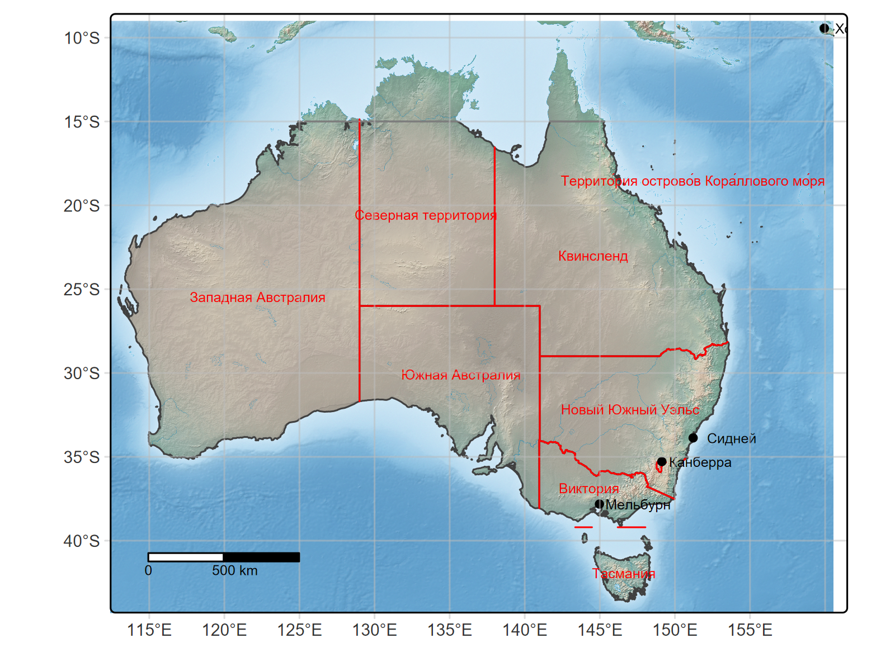

terra 1.8.29Linking to GEOS 3.12.2, GDAL 3.9.3, PROJ 9.4.1; sf_use_s2() is TRUElibrary(s2)
#Загрузка данных
root <- "D:/users/platt/shapefile/auxiliary/naturalearth/5.1.2"
cont_shape <- ursa::spatial_read(file.path(root,"110m_physical","ne_110m_coastline.shp"))
cities <- ursa::spatial_read(file.path(root,"110m_cultural","ne_110m_populated_places.shp"))
adm_bound <- ursa::spatial_read(file.path(root,"50m_cultural","ne_10m_admin_1_sel.shp"))
adm_names <- ursa:::spatial_read(file.path(root,"10m_cultural","ne_10m_admin_1_states_provinces.shp"))
filling<-raster::stack(file.path(root,"../../naturalearth.raster","HYP_HR_SR_OB_DR.tif")) |> as("SpatRaster")
#Обрезка
cont_austr<-sf::st_crop(cont_shape, xmin = 105.83, ymin = -47.53,
xmax = 160.56, ymax = -9)Warning: attribute variables are assumed to be spatially constant throughout all geometriesWarning: attribute variables are assumed to be spatially constant throughout all geometriesWarning: attribute variables are assumed to be spatially constant throughout all geometriesSpherical geometry (s2) switched offalthough coordinates are longitude/latitude, st_intersection assumes that they are planarWarning: attribute variables are assumed to be spatially constant throughout all geometriesSpherical geometry (s2) switched onfilling_austr<-crop(filling, ext(105.83,160.56,-47.53,-9))
#отрисовка
library(tmap)
tmap_mode("plot")ℹ tmap mode set to "plot".aust_map<-tm_shape(cont_austr)+tm_lines(cont_austr, col="black")+
tm_shape(filling_austr)+ tm_rgb()+
tm_shape(adm_names_austr_main)+tm_polygons(fill=NULL)+tm_text(text="name_ru",col="red", size=0.5, just="center")+
tm_shape(adm_bound_austr)+tm_lines(adm_bound_austr, col="red")+
tm_shape(cities_austr)+tm_dots(cities_austr,fill="black")+tm_text(text="NAME_RU",size =0.5, xmod=2.3)+
tm_graticules(col="gray", alpha=0.5)+
tm_scalebar(position = c("left","bottom"))── tmap v3 code detected ─────────────────────────────────────────────────────────────────────────────[v3->v4] `tm_text()`: migrate the layer options 'just' to 'options = opt_tm_text(<HERE>)'#Вывод результата
fileout <- "aust_map_reproduced.png"
if (!dir.exists(dirname(fileout)))
dir.create(dirname(fileout),recursive=TRUE)
png(fileout, res=300, width=1600, height=1200,
type="cairo", pointsize=12, family="sans")
print(aust_map)Scale bar set for latitude km and will be different at the top and bottom of the map.devSVG
2 